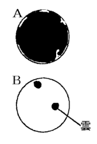
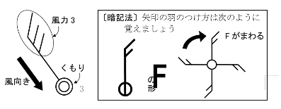
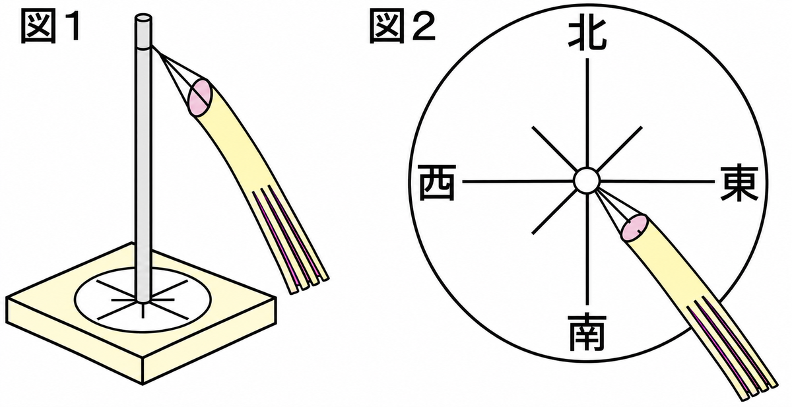
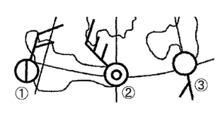
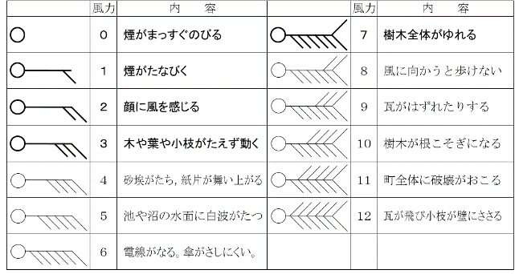
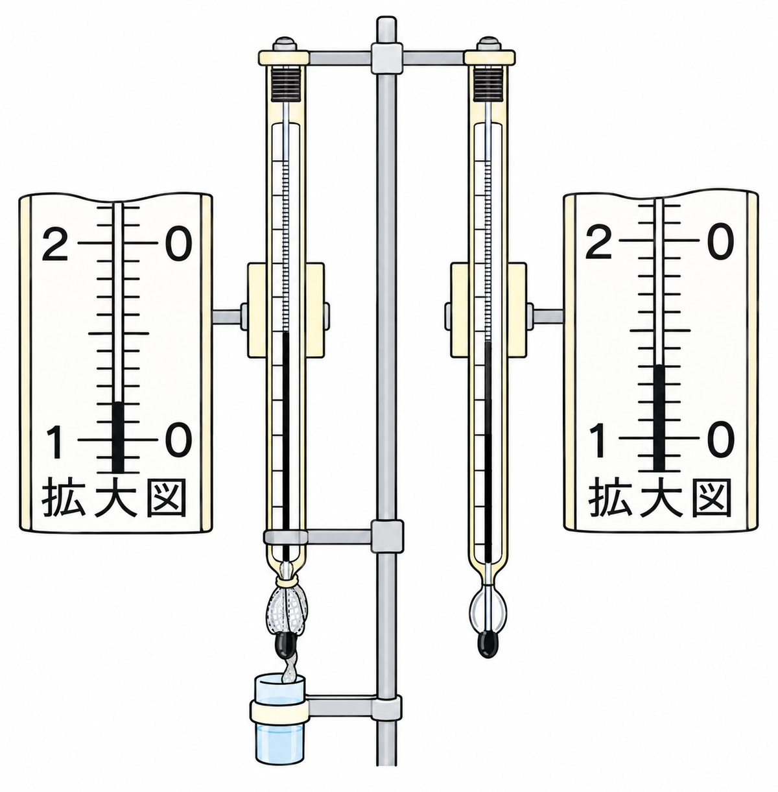
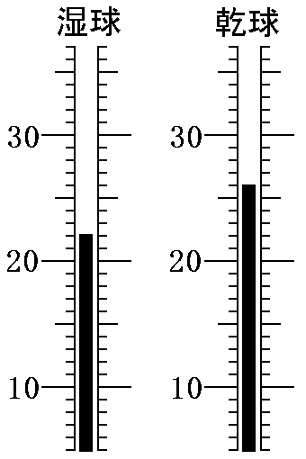
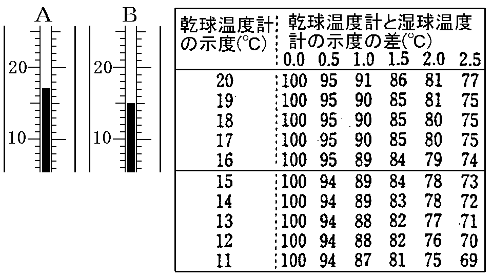

雲量・天気記号・風・乾湿計
空全体を10としたとき、雲がしめる量を雲量といいます。雲量で天気を決めます。
| 雲量 | 天気 |
|---|---|
| 0〜1 | 快晴 |
| 2〜8 | 晴れ |
| 9〜10 | くもり |

空全体が雲でおおわれている（全面黒）ときは雲量10で、天気はくもりです。
雲量0〜1は①、2〜8は②、9〜10は③です。
天気は記号で表します。

霧・雷・あられの記号は、覚えなくてもよいです。
○は①、⦶は②、●は③です。
風向は、風がふいてくる方向で表します。たとえば北から南へふく風は「北の風」です。
方位は北・東・南・西を基準に16に分けます。これを十六方位といいます。


北と東の間の真ん中は①、東と南の間の真ん中は②、南と西の間は③です。
風の強さは風力で表します。風力は0〜12の13階級あります。
天気記号には、風向を表す矢と、風力を表す矢羽根をつけます。矢羽根の本数が風力です。

風力1は矢羽根1本、風力2は2本…と、風力の数だけ矢羽根をつけます（テキストの風力階級表のとおり）。
矢の向きが①、矢羽根の本数が②を表します。
気温は、温度計に直接日光が当たらないよう、風通しのよい日かげではかります。地上約1.5mの高さではかるのが基本です。
乾湿計は、2本の温度計を並べたものです。片方はぬれたガーゼで球部をつつんだ湿球、もう片方は乾球です。
湿球はガーゼの水が蒸発するときに熱をうばうので、ふつう乾球より低い温度を示します。

湿球のガーゼから水が①するとき、熱を②ので、湿球は乾球より低くなります。
乾球の示度と、乾球と湿球の差から、湿度表で湿度を読みます。
たとえば乾球20℃、湿球17℃のとき、差は3℃です。湿度表で「乾球20℃」の行と「差3.0℃」の列が交わるところを読むと、73%です。


湿度表では、乾球20℃・差3.0℃の湿度は73%です。
①乾球を読む → ②乾球と湿球の差を求める → ③湿度表で交わる所を読む。